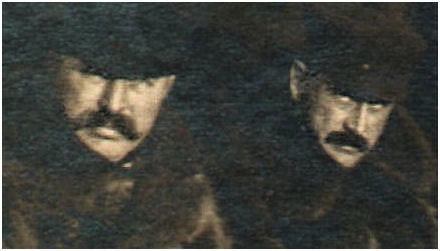

|

THE TWO
ALPHONSES
OR
LIKE FATHER, LIKE SON
It sounds like
the title of a Feydeau farce, and yet nothing could be
more fitting. Alphonse Charette, father and son,
are so alike that each seems to be the mirror of
the other. Their lives are so closely bound together, same surroundings, same
trade, same fate, that a single website
brings them together, the eighth and ninth
generations of Charettes in Canada.
Come
and meet Alphonse and
Rosianne, then their son
Alphonse, and
Marie.
They live on rue Saint-Antoine, in the Saint-Henri.

|